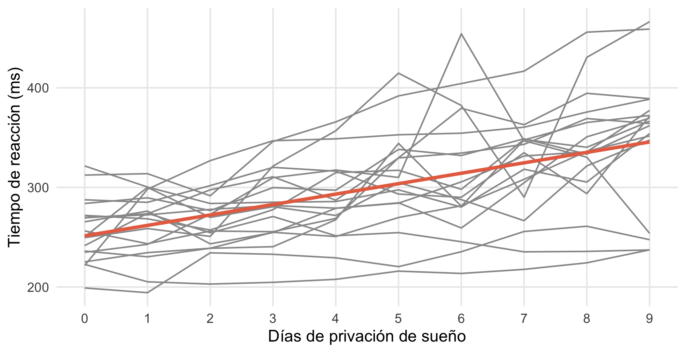
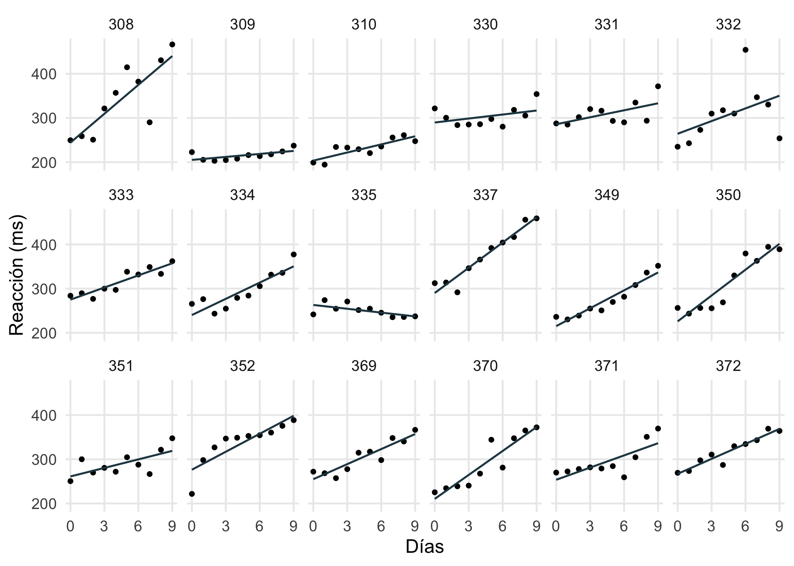
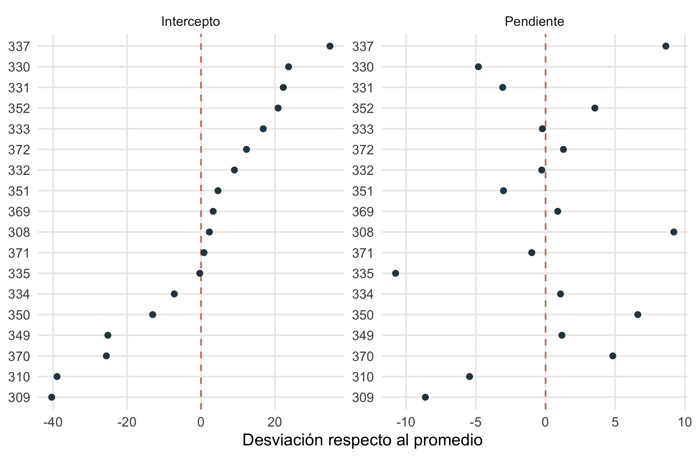
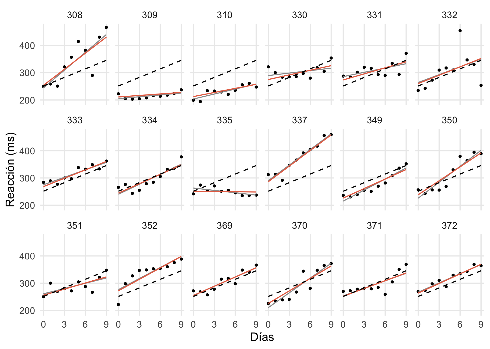
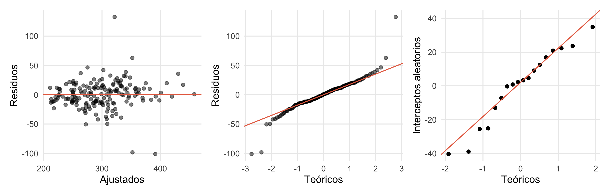
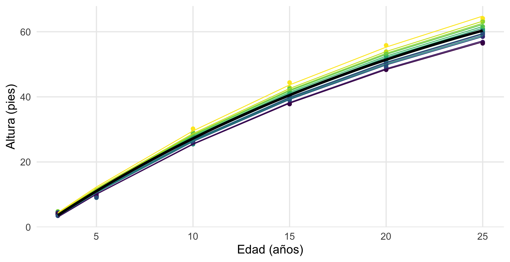

library(tidyverse)
library(lme4) # lmer(): modelos mixtos
library(lmerTest) # valores p para lmer
library(nlme) # lme() y nlme(): estructuras de correlación y modelos no lineales
library(performance) # ICC y diagnósticos
set.seed(2026)
theme_set(theme_minimal(base_size = 12) + theme(panel.grid.minor = element_blank()))Modelos mixtos y medidas repetidas
Minicurso de R · Módulo 6
R
modelos mixtos
lme4
nlme
medidas repetidas
Por qué ignorar la dependencia entre observaciones es un error, cómo modelarla con efectos aleatorios (lme4 y nlme) y cómo interpretar los resultados en diseños de medidas repetidas.
Objetivos de aprendizaje
Al terminar este cuaderno podrás:
- Reconocer cuándo las observaciones no son independientes (medidas repetidas, sitios, parcelas) y por qué eso invalida un
lm()ordinario. - Distinguir efectos fijos de efectos aleatorios.
- Ajustar modelos con intercepto aleatorio y con pendiente aleatoria usando
lme4. - Interpretar los componentes de varianza y la correlación intraclase (ICC).
- Comparar modelos y diagnosticar los supuestos.
- Explicar la relación entre un modelo mixto, el ANOVA de medidas repetidas y la prueba t pareada.
- Ajustar un modelo no lineal mixto con
nlme.
1. El problema: observaciones que no son independientes
Los modelos del Módulo 5 suponen que cada fila es independiente de las demás. Esto se rompe cuando:
- se mide al mismo individuo varias veces (medidas repetidas, series por sujeto);
- las observaciones vienen de grupos (estudiantes en colegios, parcelas en una misma finca, sitios en un mismo arrecife);
- hay una estructura jerárquica o espacial.
Observaciones del mismo grupo se parecen entre sí más que a las de otro grupo. Si se ignora esa correlación, el modelo cree que tiene más información independiente de la que realmente hay (pseudoreplicación), los errores estándar se subestiman y los valores p resultan demasiado optimistas (Hurlbert, 1984).
Efectos fijos y aleatorios
Un modelo mixto combina dos tipos de efectos:
| Efectos fijos | Efectos aleatorios | |
|---|---|---|
| Qué son | Los niveles que interesan en sí mismos (tratamiento, tiempo) | Niveles muestreados de una población de grupos (sujetos, sitios) |
| Qué se estima | Un coeficiente por nivel o pendiente | Una varianza entre grupos |
| Ejemplo | Days (días de privación de sueño) |
Subject (los 18 voluntarios) |
Para un modelo con intercepto y pendiente aleatorios por sujeto \(j\):
\[ y_{ij} = (\beta_0 + b_{0j}) + (\beta_1 + b_{1j})\, x_{ij} + \varepsilon_{ij}, \qquad \begin{pmatrix} b_{0j} \\ b_{1j} \end{pmatrix} \sim N(\mathbf{0}, \Sigma), \quad \varepsilon_{ij} \sim N(0, \sigma^2) \]
Los \(\beta\) son los efectos fijos (el promedio de la población). Los \(b_j\) son las desviaciones de cada sujeto respecto a ese promedio.
2. Los datos: privación de sueño
sleepstudy reúne el tiempo de reacción medio (en ms) de 18 conductores de camión durante 10 días en que solo durmieron 3 horas por noche (Belenky et al., 2003).
data(sleepstudy)
as_tibble(sleepstudy)# A tibble: 180 × 3
Reaction Days Subject
<dbl> <dbl> <fct>
1 250. 0 308
2 259. 1 308
3 251. 2 308
4 321. 3 308
5 357. 4 308
6 415. 5 308
7 382. 6 308
8 290. 7 308
9 431. 8 308
10 466. 9 308
# ℹ 170 more rowsggplot(sleepstudy, aes(Days, Reaction, group = Subject)) +
geom_line(colour = "grey60") +
geom_smooth(aes(group = 1), method = "lm", colour = "#e76f51", linewidth = 1.2, se = FALSE) +
scale_x_continuous(breaks = 0:9) +
labs(x = "Días de privación de sueño", y = "Tiempo de reacción (ms)")
ggplot(sleepstudy, aes(Days, Reaction)) +
geom_point(size = 1) +
geom_smooth(method = "lm", se = FALSE, colour = "#264653", linewidth = 0.6) +
facet_wrap(~ Subject, nrow = 3) +
scale_x_continuous(breaks = c(0, 3, 6, 9)) +
labs(x = "Días", y = "Reacción (ms)")
3. Ignorar la dependencia: ¿cuánto importa?
Comparemos tres modelos para el efecto de los días:
m_lm <- lm(Reaction ~ Days, data = sleepstudy) # ignora los sujetos
m_int <- lmer(Reaction ~ Days + (1 | Subject), data = sleepstudy) # intercepto aleatorio
m_pen <- lmer(Reaction ~ Days + (Days | Subject), data = sleepstudy) # intercepto y pendiente aleatorios
tibble(modelo = c("lm (ignora sujetos)", "Intercepto aleatorio", "Intercepto + pendiente aleatorios"),
pendiente = c(coef(m_lm)["Days"], fixef(m_int)["Days"], fixef(m_pen)["Days"]),
error_est = c(summary(m_lm)$coefficients["Days", 2],
summary(m_int)$coefficients["Days", 2],
summary(m_pen)$coefficients["Days", 2])) |>
knitr::kable(digits = 2)| modelo | pendiente | error_est |
|---|---|---|
| lm (ignora sujetos) | 10.47 | 1.24 |
| Intercepto aleatorio | 10.47 | 0.80 |
| Intercepto + pendiente aleatorios | 10.47 | 1.55 |
La pendiente estimada es la misma en los tres modelos, pero su error estándar cambia bastante: 1,24 con lm, 0,80 con intercepto aleatorio y 1,55 con pendiente aleatoria. Hay dos lecciones:
- El
lmtrata las 180 mediciones como independientes, cuando en realidad son 10 mediciones de cada uno de 18 personas. Su error (1,24) queda por debajo del real (1,55). - El modelo con solo intercepto aleatorio es el más optimista (0,80). Supone que todos los sujetos se deterioran a la misma velocidad y solo difieren en el nivel de partida. Como en los datos la velocidad sí varía, ese modelo subestima la incertidumbre sobre el efecto promedio. Omitir un efecto aleatorio que existe en los datos produce intervalos demasiado angostos (Barr et al., 2013).
4. Modelo con intercepto aleatorio
La sintaxis de lmer() agrega los efectos aleatorios entre paréntesis: (efecto | grupo).
summary(m_int)Linear mixed model fit by REML. t-tests use Satterthwaite's method [
lmerModLmerTest]
Formula: Reaction ~ Days + (1 | Subject)
Data: sleepstudy
REML criterion at convergence: 1786.5
Scaled residuals:
Min 1Q Median 3Q Max
-3.2257 -0.5529 0.0109 0.5188 4.2506
Random effects:
Groups Name Variance Std.Dev.
Subject (Intercept) 1378.2 37.12
Residual 960.5 30.99
Number of obs: 180, groups: Subject, 18
Fixed effects:
Estimate Std. Error df t value Pr(>|t|)
(Intercept) 251.4051 9.7467 22.8102 25.79 <2e-16 ***
Days 10.4673 0.8042 161.0000 13.02 <2e-16 ***
---
Signif. codes: 0 '***' 0.001 '**' 0.01 '*' 0.05 '.' 0.1 ' ' 1
Correlation of Fixed Effects:
(Intr)
Days -0.371Se lee así:
- Efectos fijos: cada día adicional sin dormir aumenta el tiempo de reacción en unos 10 ms (IC 95 % más abajo).
- Efectos aleatorios: la varianza entre sujetos en el intercepto (
Subject (Intercept)) y la varianza residual (dentro de sujetos).
Correlación intraclase (ICC)
El ICC es la proporción de la varianza total que se debe a diferencias entre grupos:
\[ ICC = \frac{\sigma^2_{sujeto}}{\sigma^2_{sujeto} + \sigma^2_{residual}} \]
Un ICC alto indica que las observaciones del mismo grupo se parecen mucho y que ignorar la estructura sería grave.
icc(m_int)# Intraclass Correlation Coefficient
Adjusted ICC: 0.589
Unadjusted ICC: 0.424confint(m_int, parm = "Days", method = "Wald") 2.5 % 97.5 %
Days 8.891041 12.043535. Modelo con pendiente aleatoria
Como los sujetos no solo difieren en el nivel de partida sino también en cuánto se deterioran, permitimos que la pendiente varíe:
summary(m_pen)Linear mixed model fit by REML. t-tests use Satterthwaite's method [
lmerModLmerTest]
Formula: Reaction ~ Days + (Days | Subject)
Data: sleepstudy
REML criterion at convergence: 1743.6
Scaled residuals:
Min 1Q Median 3Q Max
-3.9536 -0.4634 0.0231 0.4634 5.1793
Random effects:
Groups Name Variance Std.Dev. Corr
Subject (Intercept) 612.10 24.741
Days 35.07 5.922 0.07
Residual 654.94 25.592
Number of obs: 180, groups: Subject, 18
Fixed effects:
Estimate Std. Error df t value Pr(>|t|)
(Intercept) 251.405 6.825 17.000 36.838 < 2e-16 ***
Days 10.467 1.546 17.000 6.771 3.26e-06 ***
---
Signif. codes: 0 '***' 0.001 '**' 0.01 '*' 0.05 '.' 0.1 ' ' 1
Correlation of Fixed Effects:
(Intr)
Days -0.138VarCorr(m_pen) Groups Name Std.Dev. Corr
Subject (Intercept) 24.7407
Days 5.9221 0.066
Residual 25.5918 VarCorr() muestra la desviación estándar del intercepto (≈ 25 ms) y de la pendiente (≈ 6 ms/día), y su correlación. Una correlación cercana a cero indica que el nivel inicial no predice la velocidad del deterioro.
¿Cuál modelo es mejor?
Para comparar modelos anidados que difieren en efectos aleatorios, se ajustan por máxima verosimilitud restringida (REML, por defecto) y se comparan con una prueba de razón de verosimilitudes. Con anova() sobre los modelos, lmerTest los reajusta automáticamente cuando hace falta:
anova(m_int, m_pen, refit = FALSE)Data: sleepstudy
Models:
m_int: Reaction ~ Days + (1 | Subject)
m_pen: Reaction ~ Days + (Days | Subject)
npar AIC BIC logLik -2*log(L) Chisq Df Pr(>Chisq)
m_int 4 1794.5 1807.2 -893.23 1786.5
m_pen 6 1755.6 1774.8 -871.81 1743.6 42.837 2 4.99e-10 ***
---
Signif. codes: 0 '***' 0.001 '**' 0.01 '*' 0.05 '.' 0.1 ' ' 1AIC(m_int, m_pen) df AIC
m_int 4 1794.465
m_pen 6 1755.628El modelo con pendiente aleatoria ajusta mucho mejor, y como consecuencia, los intervalos de confianza para el efecto de los días son más realistas.
Efectos aleatorios: ¿cómo se desvía cada sujeto?
Los BLUPs (best linear unbiased predictors) son las desviaciones estimadas de cada sujeto respecto al promedio. Se pueden ver como un gráfico tipo “oruga”:
re <- ranef(m_pen)$Subject |>
as_tibble(rownames = "Subject") |>
rename(Intercepto = `(Intercept)`, Pendiente = Days) |>
pivot_longer(-Subject, names_to = "efecto", values_to = "desviacion") |>
group_by(efecto) |>
mutate(Subject = fct_reorder(Subject, desviacion)) |>
ungroup()
ggplot(re, aes(desviacion, Subject)) +
geom_vline(xintercept = 0, linetype = 2, colour = "#e76f51") +
geom_point(colour = "#264653") +
facet_wrap(~ efecto, scales = "free") +
labs(x = "Desviación respecto al promedio", y = NULL)
Predicciones por sujeto: el efecto de “encogimiento”
Los modelos mixtos suavizan las estimaciones de cada sujeto hacia el promedio poblacional, en especial cuando hay pocos datos (shrinkage). Compara la regresión por separado con la que ofrece el modelo mixto:
sleepstudy$pred_mixto <- predict(m_pen)
sleepstudy$pred_pob <- predict(m_pen, re.form = NA) # solo efectos fijos
ggplot(sleepstudy, aes(Days)) +
geom_point(aes(y = Reaction), size = 0.8) +
geom_smooth(aes(y = Reaction), method = "lm", se = FALSE, colour = "grey60", linewidth = 0.5) +
geom_line(aes(y = pred_mixto), colour = "#e76f51") +
geom_line(aes(y = pred_pob), colour = "black", linetype = 2) +
facet_wrap(~ Subject, nrow = 3) +
scale_x_continuous(breaks = c(0, 3, 6, 9)) +
labs(x = "Días", y = "Reacción (ms)")
6. Diagnóstico
Se revisan los residuos y también los efectos aleatorios, porque se supone que ambos son normales:
library(patchwork)
d <- tibble(aj = fitted(m_pen), res = resid(m_pen))
re_int <- ranef(m_pen)$Subject[["(Intercept)"]]
(ggplot(d, aes(aj, res)) + geom_point(alpha = 0.5) + geom_hline(yintercept = 0, colour = "#e76f51") +
labs(x = "Ajustados", y = "Residuos")) |
(ggplot(d, aes(sample = res)) + stat_qq(alpha = 0.5) + stat_qq_line(colour = "#e76f51") +
labs(x = "Teóricos", y = "Residuos")) |
(ggplot(tibble(re_int), aes(sample = re_int)) + stat_qq() + stat_qq_line(colour = "#e76f51") +
labs(x = "Teóricos", y = "Interceptos aleatorios"))
TipConsejo
Con pocos grupos (menos de unos 5 a 6) es difícil estimar una varianza entre grupos. En ese caso conviene usar el grupo como efecto fijo. También, si aparece el aviso singular fit, el modelo es más complejo de lo que los datos permiten: simplifica los efectos aleatorios.
7. Medidas repetidas: relación con la prueba t pareada y el ANOVA
Cuando solo hay dos momentos, un modelo con intercepto aleatorio por sujeto es equivalente a la prueba t pareada. Lo comprobamos con los días 0 y 9:
dos <- sleepstudy |> filter(Days %in% c(0, 9))
ancho <- dos |> select(Subject, Days, Reaction) |> pivot_wider(names_from = Days, values_from = Reaction, names_prefix = "d")
t.test(ancho$d9, ancho$d0, paired = TRUE)$p.value[1] 2.311418e-06summary(lmer(Reaction ~ factor(Days) + (1 | Subject), data = dos))$coefficients["factor(Days)9", ] Estimate Std. Error df t value Pr(>|t|)
9.419942e+01 1.353899e+01 1.700000e+01 6.957640e+00 2.311418e-06 El valor p es idéntico. La ventaja del modelo mixto es que se generaliza a más de dos momentos, admite datos desbalanceados (sujetos con mediciones faltantes, algo que el ANOVA clásico de medidas repetidas no tolera) y permite covariables continuas.
8. Estructuras de correlación con nlme
nlme::lme() es el paquete clásico y permite especificar estructuras de correlación entre las mediciones del mismo sujeto, útil con series temporales. Por ejemplo, un proceso autorregresivo de orden 1 (AR1), donde mediciones consecutivas se parecen más que las lejanas:
m_ar1 <- lme(Reaction ~ Days, random = ~ 1 | Subject,
correlation = corAR1(form = ~ Days | Subject), data = sleepstudy)
summary(m_ar1)$tTable Value Std.Error DF t-value p-value
(Intercept) 252.84144 10.94093 161 23.109688 5.261088e-53
Days 10.46687 1.34408 161 7.787388 7.884026e-13m_sin <- lme(Reaction ~ Days, random = ~ 1 | Subject, data = sleepstudy)
anova(m_sin, m_ar1) Model df AIC BIC logLik Test L.Ratio p-value
m_sin 1 4 1794.465 1807.192 -893.2325
m_ar1 2 5 1746.191 1762.100 -868.0955 1 vs 2 50.27402 <.0001La estructura AR1 mejora claramente el ajuste (AIC de 1794 a 1746): las mediciones de días consecutivos de un mismo sujeto se parecen más entre sí que las de días lejanos, más allá de que sea el mismo sujeto. Es un modelo distinto al de pendiente aleatoria (que tenía un AIC de 1756) y ambos explican parte de la misma variación; también se pueden combinar.
9. Modelos no lineales mixtos
Muchos procesos (crecimiento, cinética química) no son lineales. nlme() ajusta una curva no lineal en la que algunos parámetros varían por grupo. Ejemplo: el crecimiento en altura de 14 árboles de pino (Loblolly) que se aproxima a una asíntota:
\[ altura = Asym + (R_0 - Asym)\, e^{-e^{lrc}\, edad} \]
m_nl <- nlme(height ~ SSasymp(age, Asym, R0, lrc),
data = Loblolly,
fixed = Asym + R0 + lrc ~ 1,
random = Asym ~ 1 | Seed, # cada árbol tiene su propia asíntota
start = c(Asym = 94, R0 = -8.25, lrc = -3.2))
summary(m_nl)$tTable Value Std.Error DF t-value p-value
Asym 101.448063 2.46160066 68 41.21223 7.874756e-50
R0 -8.627523 0.31795212 68 -27.13466 3.341766e-38
lrc -3.233727 0.03426941 68 -94.36189 7.807066e-74edades <- seq(3, 25, length.out = 100)
curva_pob <- tibble(age = edades, height = predict(m_nl, newdata = data.frame(age = edades, Seed = NA), level = 0))
Loblolly |>
mutate(ajustado = fitted(m_nl)) |>
ggplot(aes(age)) +
geom_point(aes(y = height, colour = Seed), size = 1.4, show.legend = FALSE) +
geom_line(aes(y = ajustado, colour = Seed, group = Seed), linewidth = 0.4, show.legend = FALSE) +
geom_line(data = curva_pob, aes(y = height), linewidth = 1.2) +
scale_colour_viridis_d() +
labs(x = "Edad (años)", y = "Altura (pies)")
Ejercicios
- Intercepto aleatorio. Con
Orthodont(paquetenlme), ajustadistance ~ age + (1 | Subject)conlmer(). ¿Cuánto crece la distancia por año? ¿Cuál es el ICC? - Pendiente aleatoria. Añade
agecomo pendiente aleatoria. ¿Mejora el modelo (usaanova()y AIC)? - Efecto fijo del sexo. Agrega
Sexy su interacción conage. ¿Crece igual la distancia en niños y niñas? - Pseudoreplicación. Ajusta el mismo modelo con
lm()y compara los errores estándar. ¿Qué observas?
NoteSoluciones sugeridas
data(Orthodont, package = "nlme")
o1 <- lmer(distance ~ age + (1 | Subject), data = Orthodont)
o2 <- lmer(distance ~ age + (age | Subject), data = Orthodont)
fixef(o1)["age"]; icc(o1)$ICC_adjusted age
0.6601852 [1] 0.6857391anova(o1, o2, refit = FALSE)Data: Orthodont
Models:
o1: distance ~ age + (1 | Subject)
o2: distance ~ age + (age | Subject)
npar AIC BIC logLik -2*log(L) Chisq Df Pr(>Chisq)
o1 4 455.00 465.73 -223.50 447.00
o2 6 454.64 470.73 -221.32 442.64 4.3658 2 0.1127o3 <- lmer(distance ~ age * Sex + (1 | Subject), data = Orthodont)
summary(o3)$coefficients Estimate Std. Error df t value Pr(>|t|)
(Intercept) 16.3406250 0.9813122 103.9864 16.6518101 4.193843e-31
age 0.7843750 0.0775011 79.0000 10.1208235 6.441815e-16
SexFemale 1.0321023 1.5374208 103.9864 0.6713206 5.035049e-01
age:SexFemale -0.3048295 0.1214209 79.0000 -2.5105197 1.409745e-02rbind(lm = summary(lm(distance ~ age, data = Orthodont))$coefficients["age", 1:2],
mixto = summary(o1)$coefficients["age", 1:2]) Estimate Std. Error
lm 0.6601852 0.10918158
mixto 0.6601852 0.06160592Para profundizar
- Bates, D., Mächler, M., Bolker, B. y Walker, S. (2015). Fitting linear mixed-effects models using lme4. Journal of Statistical Software, 67(1), 1–48. https://doi.org/10.18637/jss.v067.i01
- Pinheiro, J. C. y Bates, D. M. (2000). Mixed-Effects Models in S and S-PLUS. Springer.
- Zuur, A. F., Ieno, E. N., Walker, N., Saveliev, A. A. y Smith, G. M. (2009). Mixed Effects Models and Extensions in Ecology with R. Springer.
- Barr, D. J., Levy, R., Scheepers, C. y Tily, H. J. (2013). Random effects structure for confirmatory hypothesis testing: keep it maximal. Journal of Memory and Language, 68(3), 255–278.
- Hurlbert, S. H. (1984). Pseudoreplication and the design of ecological field experiments. Ecological Monographs, 54(2), 187–211.
- Belenky, G. et al. (2003). Patterns of performance degradation and restoration during sleep restriction. Journal of Sleep Research, 12(1), 1–12.